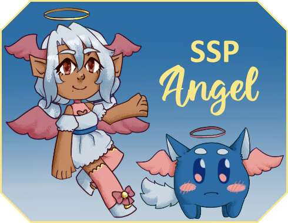

SSP Angel
SSP Angel is your new companion, and a guide to SSP! They can give you all kinds of tips and tricks, and teach you all about ghosts! And if you're already an experienced user, fear not! You can turn off their tip dialogues and use them like a normal ghost as well. They have over 100 dialogues not related to SSP at all.
The two have menus for asking them all sorts of questions about ghosts, a glossary of terms, and a listing of key combinations!
They also come with 3 balloons, 2 of which have a special option to customize which colors each character should use. There are a wide variety of options!
Give them a try! Even if you've used SSP for a long time, you might learn something new. I sure did while I was working on them!
Credits
SSP Angel and its associated balloons were a collaborative effort between multiple people, listed collectively as the "Angel Team".
- Ayakamtka - Writing, feedback, and bug testing
- GallaTheGalla - Writing help and balloon details (including all the pretty colors)
- Yuyudev - Shell art and Cotton Candy balloon base
- Zichqec - Writing, programming, and Angelbox balloon base